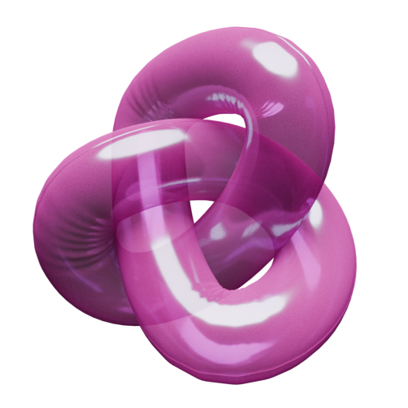

Date: 12/5/2024 Title: Early Days
-----------------------------------------------------
During the 2019 lockdowns, Kaisen and I decided to make a game. Kaisen was (is) an accomplished backend programmer working for some high-end clients and I was a starving artist fresh out of a pointless master's degree in painting. I had a story and some designs that had been floating around my brain since undergrad and were inspired heavily by CAPCOM. The initial form of the game was that of a Mega Man clone. We began our work using Unreal Engine 4 in a 2.5D platform aesthetic that would allow me to play around with 2D characters in a 3D world. It's been 4 years since and the game is currently simmering at around the prototype phase. In the following DevLog I try to breakdown what we've alreay worked on and describe where the project is currently going.